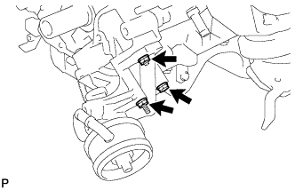
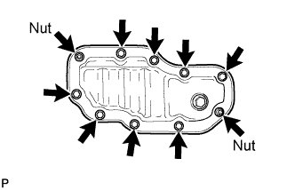
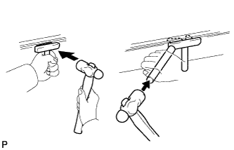
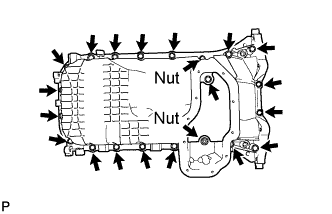
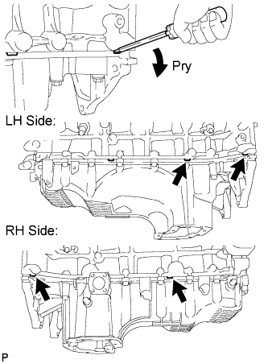
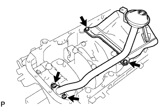
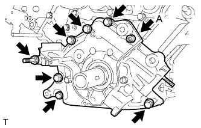
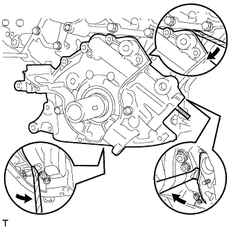
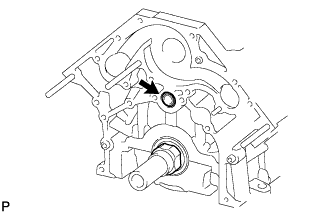

OIL PUMP > REMOVAL |
| 1. DISCHARGE FUEL SYSTEM PRESSURE |
Discharge the fuel system pressure (Click here).
| 2. DISCONNECT CABLE FROM NEGATIVE BATTERY TERMINAL |
| 3. REMOVE ENGINE ASSEMBLY |
Remove the engine assembly from the vehicle (Click here).
| 4. REMOVE TIMING BELT |
Remove the timing belt (Click here).
| 5. REMOVE CRANKSHAFT POSITION SENSOR |
 |
Disconnect the sensor connector.
Remove the bolt and sensor.
| 6. REMOVE ENGINE OIL LEVEL DIPSTICK GUIDE |
 |
Remove the dipstick.
Remove the bolt and dipstick guide.
Remove the O-ring from the dipstick guide.
| 7. REMOVE CRANKSHAFT TIMING PULLEY |
 |
Using SST, remove the timing pulley.
| Item | Parts number |
| SST (Bolt A) | 09953-05020 |
| SST (Bolt B) | 09953-05010 |
| 8. REMOVE OIL PRESSURE SENDER GAUGE ASSEMBLY |
 |
Disconnect the sender gauge connector.
Remove the sender gauge.
| 9. REMOVE OIL COOLER HOSE |
 |
Using needle-nose pliers, grip the claws of the clamps and slide the clamps to remove the oil cooler hose.
| 10. REMOVE OIL FILTER ASSEMBLY |
 |
Using SST, remove the oil filter.
| 11. REMOVE OIL FILTER BRACKET SUB-ASSEMBLY |
 |
Remove the bolt, nut, stud bolt, oil filter bracket and gasket.
| 12. REMOVE NO. 2 OIL PAN SUB-ASSEMBLY |
 |
Remove the 8 bolts and 2 nuts.
 |
Insert the blade of an oil pan seal cutter between the oil pans, cut off applied sealer and remove the No. 2 oil pan.
| 13. REMOVE OIL PAN SUB-ASSEMBLY |
 |
Remove the 19 bolts and 2 nuts.
 |
Using a screwdriver, remove the oil pan by prying between the oil pan and cylinder block as shown in the illustration.
| 14. REMOVE OIL STRAINER SUB-ASSEMBLY |
 |
Remove the 2 bolts, 2 nuts, oil strainer and gasket.
| 15. REMOVE OIL PUMP ASSEMBLY |
 |
Using a 6 mm hexagon wrench, remove bolt A.
Remove the 6 bolts and stud bolt.
 |
Using a screwdriver, remove the oil pump by prying the portions between the oil pump and cylinder block shown in the illustration.
 |
Remove the O-ring from the cylinder block.